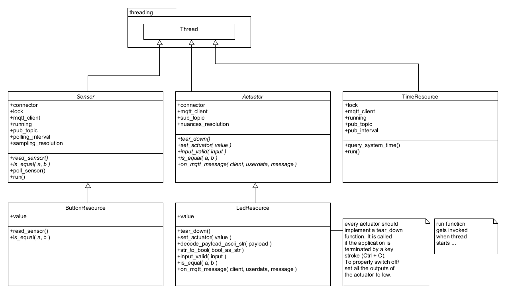
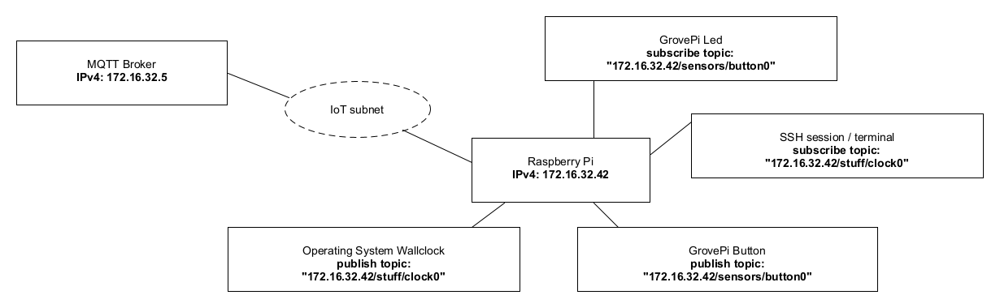

03 - MQTT¶
1. Introduction¶
This Lab will concentrate on MQTT (Message Queue Telemetry Transport). We setup a Broker on the Raspberry Pi and play around with several clients and will have a closer look to the telemetry data that we publish and subscribe. As last part of this laboratory the CoAP application from the previous laboratory is going to be refactored to use the MQTT protocol instead of CoAP.
2. Learning Aims¶
There are no learning aims associated with this laboratory exercise.
3. Prerequisites¶
For this lab you need some parts from the previous lab, but basically the MQTT part will also work if you start from scratch.
1 Raspberry Pi device (with MAC address labelled around the ethernet port)
1.1. [micro]SD card with at least 8 GB capacity
1.2. Raspberry Pi Power supply1 GrovePi board
1 GrovePi button
1 GrovePi LED (colour indifferent)
1 computer (your own laptop or a lab machine)
5.1. Ethernet port connected to the IoT subnet (Recommendation: WLAN switched off)
5.2. SSH client installed (ssh, PuTTY, …)
5.3. Wireshark (Network packet capturing software)
5.4. Zip software (7-zip, WinZip, …)
5.5. Editor of your choice for modifying the code base.
4. Getting started¶
4.1 A few words of introduction¶
This laboratory has been developed and tested on a Linux machine. In principal it should work fine on Mac OS X and Windows too. Should you run into problems with the libraries or scripts provided with this laboratory it is maybe worth trying to use a Linux VM on your laptops host system in order to complete all the demanded tasks.
4.2 Preparation of the hardware¶
Connect the GrovePi board to your Raspberry Pi, then connect a GrovePi LED to the digital pin D4 and a GrovePi button to the digital pin D3. Make sure that the Raspberry Pi and your development machine are connected to the IoT subnet. As mentioned earlier, it is a good idea to turn off all the other network adapters (WLAN, …) on your development machine during the lab. If you are connected to the IoT subnet you should have connectivity to the “internet”.
4.3 Installation of the required packages (already installed)¶
It is assumed that you have completed the previous laboratories. Due to that you should have a [micro]SD card with a working Raspbian operating system on it with all the necessary packages installed to interact with the GrovePi board and its resources.
Start up your Raspberry Pi and log in as pi user via a SSH client of your choice.
The following additional packages are used during this laboratory:
netifaces package (system interface in python to access low level network subsystem information)
Installation command:
sudo pip3 install netifaces (python3)
Mosquitto. MQTT broker which we install locally on the Raspberry Pi to send messages during the first parts of this laboratory. It runs as a service.
Installation commands:
sudo apt-get update
sudo apt-get install mosquittoControl the service:
sudo service mosquitto [ status | start | stop ]
Mosquitto-Clients. MQTT client to publish and subscribe MQTT messages
Installation command:
sudo apt-get install mosquitto-clients
Paho MQTT is a Python library which implements the MQTT protocol.
Installation command:
sudo pip3 install paho-mqtt (python3)
5. MQTT Basics¶
5.1 Publish and subscribe¶
First of all, we run the mosquitto broker.
Open a terminal/console and type
mosquitto. The output should show you the mosquitto version number and some information about the opened socket for ipv4 and ipv6, if available.If you get an error message, be sure the broker does not run as a background task. (It does work too, but you can’t see the standard output with ease). Type
sudo service mosquitto stop, to stop the mosquitto daemon on your system.
The broker is now up and listens on all your interfaces on port 1883.
Now we are going to start a subscriber that receives every message (absolutely everything) thats published to this broker. It works as a logging console that logs every data passed through the broker, we do that only to see whats happening. It isn’t mandatory and can be omitted if you feel familiar with MQTT.
Open another terminal, connect to your Raspberry Pi and type:
mosquitto_sub -h 127.0.0.1 -p 1883 -t "#" -v-h: stands for host
-p: port
-t: topic
-v: verbose, print the received topic
#: a wildcard that show all subsequent levels of hierarchy in the topic string for more information see the man pages by typingman mosquittoand search the man page with /WILDCARD TOPIC.
In the first terminal where the broker is running you should see a message:
“New client connected from \<ip> as \<name>”
Now you are ready to use the broker.
5.1.1 Mosquitto broker as a service¶
Later on if you want to have your own mosquitto broker on the Raspberry Pi you can run it as a service. Control of the mosquitto service as follows:
Enable: sudo systemctl enable mosquitto
Start: sudo systemctl start mosquitto
Stop: sudo systemctl stop mosquitto
Disable: sudo systemctl disable mosquitto
Status: sudo systemctl status mosquitto
5.1.2 Go deeper, hack it!¶
To play around we use the Rasperry Pi with several terminals (SSH sessions). Each of this terminal acts like a client, so you can simulate lots of clients on your Raspberry Pi with ease.
Open a further Terminal, connect to your Raspberry Pi and publish some payload data, probably a “hello world”, with the
mosquitto_pubcommand to your localhost (127.0.0.1 or the IP address of the Raspberry Pi’s network interface). The log on the mosquitto broker terminal should be altered and on the subscribing terminal you should see the topic and the payload. E.g.:Subscribing terminal:
mosquitto_sub -h 127.0.0.1 -p 1883 -t "#" -vPublishing terminal:
mosquitto_pub -h 127.0.0.1 -p 1883 -t "<IP-ADDRESS>/sensors/button0" -m "Hello, World!"
Open another terminal session that subscribes just to your chosen topic.
Figure out how the topic wildcards work. (+ and #) Consult the mosquitto man pages section “Wildcard Topic Subscriptions”
For example: Test the wildcards subscription. Subscribe to all machines HDD temperatures (each HDD a machine contains):
Exemplary publish commands:
mosquitto_pub -h 127.0.0.1 -p 1883 -m "75 degrees Celsius" -t /machines/<IP-ADDRESS_1>/sensors/temperature/hdds/sdf
mosquitto_pub -h 127.0.0.1 -p 1883 -m "75 degrees Celsius" -t /machines/<IP-ADDRESS_1>/sensors/temperature/hdds/sdj
mosquitto_pub -h 127.0.0.1 -p 1883 -m "75 degrees Celsius" -t /machines/<IP-ADDRESS_2>/sensors/temperature/hdds/sdb
Elaborate a valid wildcard subscription and test it.Further example: Get data of each sensor of all machines / IP addresses:
Exemplary publish commands:
mosquitto_pub -h 127.0.0.1 -p 1883 -m "200 RPM" -t /machines/<IPADDRESS_ 1>/sensors/fanspeed/socket0
mosquitto_pub -h 127.0.0.1 -p 1883 -m "85 degrees Celsius" -t /machines/<IP-ADDRESS_2>/sensors/temperature/cpus/cpu0
Elaborate a valid wildcard subscription and test it.
Start many publishers and produce a bit of load with loops
while true; do mosquitto_pub <arguments>; donemeasure/discover the CPU load of the broker (Rasperry Pi in our case) and see whats happening.
Publish and subscribe to a broker from your neighbors computer …
Each student should start at least a publisher and a subscriber connecting to a common broker. Try to chat via MQTT.
Fact: These concepts are the fundamentals of the Facebook Messenger, which uses MQTT to simply transmit telemetry data from client to client.
Now you should have enough experience with publishing and subscribing. But some of you would ask about security. At the moment if you know the IP of a broker you can listen to everything. That is, in fact, totally against privacy. We step into user authentication and topic access control lists in the next chapter.
5.2 User Authentication and Access Control Lists¶
MQTT provides two types to secure your data. First is a more common user authentication where a subscriber and a publisher has to login. The second concept is based on the topics. It simply allows a user to publish or subscribes only to some predefined topics.
5.2.1 It’s all about users and their passwords¶
To start, we modify the broker configuration.
Copy the original mosquitto.conf file to a folder of your choice.
cp /etc/mosquitto/mosquitto.conf /folder/of/your/choiceOpen a further terminal, connect to your Raspberry Pi and open either the mosquitto.conf man page
man mosquitto.confor the example configuration file:cp/usr/share/doc/mosquitto/examples/mosquitto.conf.gz ~
gunzip mosquitto.conf.gz
vim mosquitto.conf
Like this you have a reference to look after and have example configuration parameters.Open your copy of the configuration file in an editor. Find the chapter “Security” in the example configuration file, get an overview and perform the following steps in your copy of the configuration file:
Deny anonymous access allow_anonymous false
Add a userlist in an additional file
Note: To store passwords in a plain text file is not save for production. Never do that. In live applications, you need an authentication server that communicates with mosquitto. If you like, setup the mosquitto-auth-plugin and configure it for your computer. But this is really optional and not part of this lab.
The reason for this “works like” authentication we use, is because of insufficient time for this lab. But if you like, setup the auth-server and use it maybe in a future lab (e.g.: your IoT project).
A full description of the configuration file is at:/usr/share/doc/mosquitto/examples/mosquitto.conf.gz
Example:
password_file /home/pi/mosquitto_passwords
(line in your configuration file)
Use themosquitto_passwdutility to add the users to a given password file:
mosquitto_passwd -c /home/pi/mosquitto_passwords user1
mosquitto_passwd /home/pi/mosquitto_passwords user2
mosquitto_passwd /home/pi/mosquitto_passwords user3
Start the broker with:
sudo mosquitto -c /<path>/<to>/<your>/mosquitto.confTry to publish and subscribe to the broker.
If you fall into trouble, try:
mosquitto_sub/pub –helpNote that your global subscriber should now subscribe with a username and a password, e.g:
mosquitto_sub -h 127.0.0.1 -p 1883 -t "#" -v -u user1 -P iotlab
mosquitto_pub -h 127.0.0.1 -p 1883 -m "85 degrees Celsius" -t /machines/<IP-ADDRESS>/sensors/temperature/cpus/cpu0 -u user2 -P iotlab
Add a user for your neighbor and ask him to publish a cat joke to your broker.
6 The MQTT_thing application¶
In the previous laboratory, a simple CoAP application was built to let sensors and actuators communicate with each other via CoAP. In this chapter, the aim is to build the same application with the same functional behaviour, but the messaging between the devices should be realized with the MQTT protocol.
The IoT subnet provides a MQTT broker which can be used by the MQTT_thing application. Of course you can use the broker installation on your Raspberry Pi if you prefer. When working on the laboratory at your site/infrastructure, then you must use the broker on your Raspberry Pi. The broker from the ZHAW IoT laboratory infrastructure is not available from outside of the laboratory rooms.
6.1 MQTT broker¶
A MQTT broker should be reachable from within the IoT subnet under the IP address: 172.16.32.5
The configuration of the broker is by default, so no restrictions or missing permissions are set. Every client can connect. Be sure to choose a unique client-id to connect, otherwise the broker gets confused.
Your client can publish and/or subscribe to every possible topic.
6.2 Upload and test the provided code template¶
Upload the archive that contains the code template (MQTT_thing-0.3-dbg.zip) which is provided with this documentation to your Raspberry Pi and unzip it.
After that you shoud see a folder named MQTT_thing. Change into the MQTT_thing/src/ directory, where the following files can be found:
-rw-r--r-- 1 pi pi 2812 Oct 17 03:07 Actuator.py
-rw-r--r-- 1 pi pi 2858 Oct 17 03:07 ButtonResource.py
-rw-r--r-- 1 pi pi 2858 Oct 17 03:07 grove_pi_interface.py
-rw-r--r-- 1 pi pi 3800 Oct 17 03:07 LedResource.py
-rw-r--r-- 1 pi pi 1284 Oct 17 03:07 log.py
-rw-r--r-- 1 pi pi 2527 Oct 17 03:07 mqttconfig.py
-rwxr-xr-x 1 pi pi 5273 Oct 17 03:07 mqttthing.py
-rw-r--r-- 1 pi pi 2709 Oct 17 03:07 Sensor.py
-rw-r--r-- 1 pi pi 2820 Oct 17 03:07 TimeResource.py
-rw-r--r-- 1 pi pi 1616 Oct 17 03:07 tools.py
Start the program: python3 ./mqttthing.py
The application uses a python logger which is configured to be very verbose since the application is in a development state. Do not be concerned about if your console gets spammed with log messages during the application runs.
To test the functionality of the application it is sufficient for now to test if the connected LED turns on as long as the connected button is pressed and switches off again if the button is released.
The application has also implemented a clock resource. This resource publishes the current system time to a MQTT broker. To check this, you can open a terminal, connect to your Raspberry Pi and subscribe to this topic:
mosquitto_sub -h <BROKER-IP> -t "<RaspberryPi-IP>/stuff/clock0"
The program can be terminated by pressing Ctrl + C.
6.3 Study the architecture¶
The application is entirely written in Python (version 3.4.2). The implementation of MQTT is provided by the paho-mqtt package. In general the implementation of MQTT_thing uses object orientation, but it was decided to stay in a pragmatic scope and not to exaggerate the object orientation.
6.3.1 Basic concept¶
The MQTT_thing application consists of a main module, mqttthing, which represents a MQTT client. The client itself has resources (sensors and actuators) which can be reached via an appropriate MQTT topic.
The basic MQTT_thing template consists of a MQTT client with the following resources:
button0: GrovePi Button
led0: GrovePi LED
clock0: Resource which gets the operating system’s time and serves it to the requester.
The resources have the following class structure:

This class diagram shows only the most important functions / instance variables at current classes.
As you can see this application uses pythons pseudo threads to manage parallel tasks instead of coroutines which were used to implement the CoAP_thing application. The reason for this is mainly because of the paho-mqtt package, which is also based on python threads.
Study and try to understand the code. Be aware of the multithreading mechanisms like locks, running flags, etc.
6.3.2 Network situation¶

The IP addresses are only exemplary!
The CoAP_thing application implemented a classical approach of the observer pattern. A sensor was polled and if its state changed, all the observers of the sensor were notified. The MQTT_thing application is completely different:
Sensors publish their state changes on a specific topic, via MQTT broker.
Actuators subscribe on the topic that they are interested in, via MQTT broker.
6.4 Expand the application¶
Now after getting a first glance, the basic concept of the MQTT_thing application should be understood. For this task at least 2 Raspberry Pi’s are needed. Therefore you should work in goups of two or three.
To start and see if the MQTT_thing application also works distributed over a network, it is recommended that a very simple network scenario is implemented first.
7 Grading¶
3 points maximum will be awarded for completion of the exercises.